Begasungsplan-Fenster
Wenn Sie im Begasungsplan-Fenster auf die Schaltfläche Nächster Schritt
klicken, wird eine Bildschirmmaske angezeigt wie unten dargestellt. Im
Begasungsplan-Fenster werden alle Daten und Variablen eingegeben, die für die
Berechnung der Begasungsdosis und dosierung eine Rolle spielen.
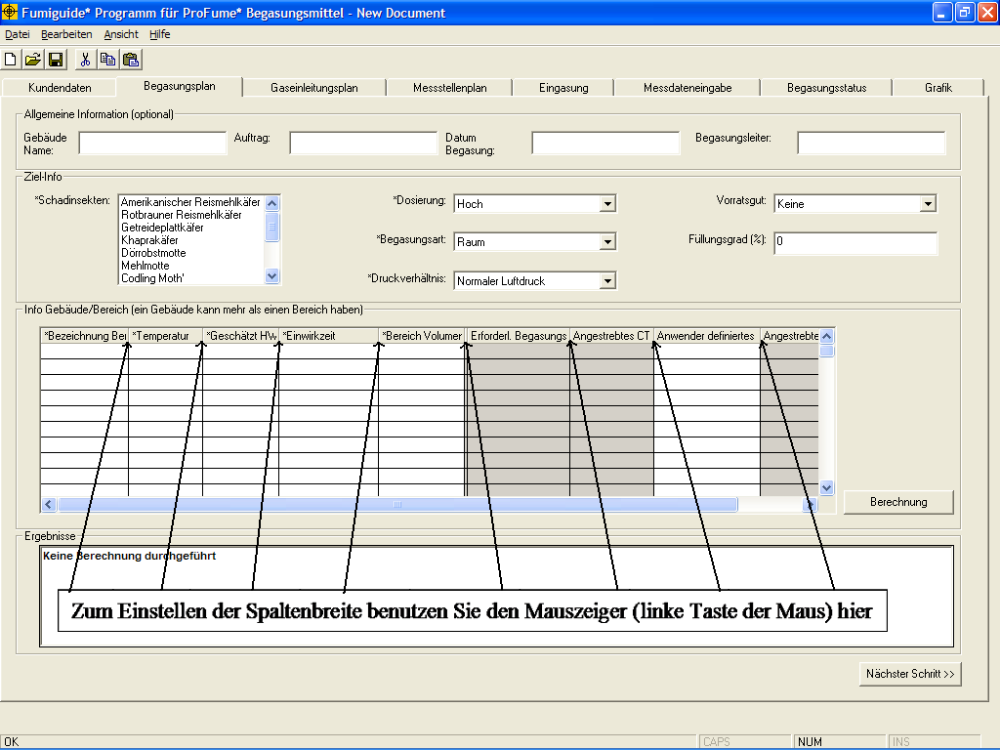
Anmerkung: Die Breite der einzelnen ProFume Fumiguide
Spalten lässt sich ändern, indem der Cursor auf der grauen Linie zwischen den
Spaltenüberschriften platziert und die Spaltenbreite nach Bedarf
vergrößert/verkleinert wird. Bitte beachten Sie auch, dass die grauen Bereiche
in den einzelnen Fenstern zur Anzeige der Berechnungsergebnisse dienen. In den
weiß hinterlegten Feldern können Daten eingegeben oder aus Auswahllisten
selektiert werden.
Mit einem "*" markierte Felder sind unbedingt
auszufüllen. Die folgenden Felder müssen unbedingt ausgefüllt werden, da
sonst eine Berechnung der Dosierung nicht möglich ist. Ihre jeweiligen
Funktionen sind im Folgenden beschrieben.
*Schadinsekten: Schadinsekt
bzw. Gruppe von Schadinsekten, die durch die Begasung bekämpft werden sollen.
Durch Anklicken der im Menü aufgelisteten Schadinsekten können ein oder mehrere
Insekten ausgewählt werden. Ist der gesuchte Schädling nicht namentlich
aufgeführt, wählen Sie aus dem Menü entweder „anderer Käfer“ oder „andere
Motte“. Um ein ausgewähltes Schadinsekt wieder zu löschen, klicken Sie einfach
erneut auf den Namen.
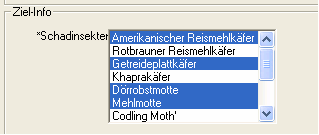
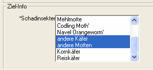
*Dosierung
: Im ProFume Fumiguide Programm sind zwei
Optionen für die Schädlingsbekämpfung vorgesehen: „Hoch“ und „Niedrig“.
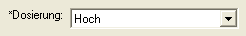
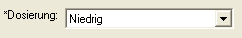
Die „Niedrig" Option gewährleistet
die Bekämpfung von Larven, Puppen, Adulten und einigen Eistadien. Dieses
Basisniveau der Bekämpfung gewährleistet die Erhaltung des Hygienestandards
durch die Begasung.
Die „Hoch" Option gewährleistet die Bekämpfung von Eistadien, Larven, Puppen
und Adulten. Dieses hohe Niveau der Bekämpfung gewährleistet eine nachhaltige
Entwesung durch die Begasung.
Nach Berechnung der Dosierungen für „Hoch“ oder „Niedrig“ kann der
Begasungsleiter eine entsprechende Dosierung empfehlen, die über „Niedrig" liegt
und bis „CT 1500" gehen kann, welche den Kundenerwartungen entsprechen wird.
Dies wird durch Eingabe in das Feld „Anwender definiertes CT“ erreicht.

Bitte beachten Sie, dass der
Wert für "Anwender definiertes CT" nicht kleiner als 36 oder
größer als 1500 sein darf.
Die Präzisionsbegasung definiert sich durch Optimierung des
Begasungsmitteleinsatzes zur Maximierung der Wirksamkeit und Minimierung des
damit verbundenen Risikos. Präzisionsbegasungen erreicht man durch Intergration
und Berücksichtigung aller den Begasungserfolg beeinflußenden Faktoren wie die
jeweiligen Schadinsekten, die Temperatur, die Einwirkzeit und verbesserte
Abdichtungsmaßnahmen bei der Planung und der Durchführung der Begasung.
Vorratsgut: Das in dem zu begasenden Raum gelagerte Nahrungsmittel. In der Auswahlliste sind verschiedene Vorratsgüter aufgeführt, es darf jedoch nur eines ausgewählt werden.
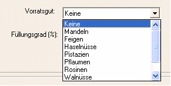
*Begasungsart: Es
sind zwei verschiedene Begasungsarten vorgesehen: Vorratsgüter oder Raum.
Wählen Sie „Raum“ wenn Schädlingsbefall vorrangig in Gebäuden, Anlagen,
Maschinen, etc. (wie Mühlen, Lebensmittelverarbeitung, Lagerhäuser) auftritt.
Wählen Sie „Vorratsgüter“ wenn Schädlingsbefall vorrangig in Produkten und
Lebensmitteln (wie Schüttgut oder abgepackter Ware) auftritt.
Diese beiden Optionen beziehen sich jeweils auf das eigentliche Ziel der
Begasung, d. h. entweder das Gebäude selbst (Raum) oder das in einem Gebäude
(Begasungskammer) gelagerte Vorratsgüter. Die Zieldosierung für ein
Vorratsgut ist höher als für einen Raum.
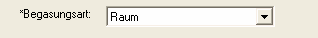
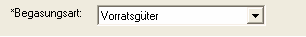
Füllungsgrad gibt
die geschätzte prozentuale Füllhöhe des Vorratsguts in dem zu begasenden Raum
an. Hier können Sie eine ganze Zahl zwischen 0 und 100 eingeben.
.
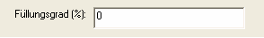
*Druckverhältnis: Im ProFume Fumiguide
stehen zwei verschiedene Druck-Optionen zur Verfügung: „Normaler Luftdruck“
oder „Vakuum“.
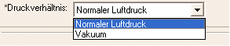
Bezeichnung Bereich bezeichnet einen
Teilbereich innerhalb eines Objekts oder eines Gebäudes oder auch das gesamte
Gebäude. Das kann beispielsweise ein Stockwerk, ein Raum oder ein Teil des
Gebäudes sein. Jeder Bereich kann individuelle Werte für Temperatur, geschätzte
HWT und Volumen haben. Es können mehrere Bereiche eingegeben werden; für jeden
angegebenen Bereich wird eine individuelle Dosierung
aufgeführt.
Gebäude: Ein freistehendes Bauwerk,
Vorratsspeicher, Begasungskammer usw.
Dosierung: Bezieht
sich auf die während der Begasungsdauer akkumulierte Menge an g-h/m3 oder
oz-h/MCF. Der Begriff Dosierung lässt sich auch durch CT ersetzen. Zu den
verschiedenen Dosierungsarten zählen: Zieldosierung, Vorberechnete Dosierung und
Erreichte Dosierung.
Dosis: Konzentration/Volumen (g/m³
oder ounces/MCF) der in den zu begasenden Raum eingeleiteten
Begasungsmittelmenge — (siehe
Zielkonzentration).
*Temperatur: Die Temperatur in Grad
(Coder F) in dem von Schädlingen befallenen Bereich, entweder im Gebäude, in der
Maschinenausrüstung oder im Vorratsgut selbst. Bei der Begasungskammern (bzw.
Vorratsgut) bezeichnet dieser Wert die Innentemperatur des zu entwesenden
Vorratsgutes. Es kann eine beliebige Temperatur zwischen 4,4 °C (40 °F) und 65,6
°C (150 °F) eingegeben werden.
*Geschätzte Halbwertzeit
(HWT): Die Zeitdauer, die erforderlich ist, bis die
Begasungsmittelkonzentration um die Hälfte abgebaut ist, gemessen in Stunden.
Die geschätzte HWT muss zwischen 1,00 und 1000,00 Stunden
liegen.
*Einwirkzeit: Die Zeitdauer (Einwirkdauer)
während der ein Begasungsmittel in einem Gebäude verweilt, um den Zielschädling
abzutöten. Die vorgesehene Einwirkzeit muss zwischen 1,00 und 168,00 Stunden
liegen. Während der Überwachung der Begasungsmittelkonzentrationen sollte die
Einwirkzeit in den Fenstern Begasungsplan, Messdateneingabe und Begasungs-Status
übereinstimmen. Die Einwirkzeit kann bei der Begasungsplanung von einem Bereich
zum nächsten variieren, bei der Überwachung eines Begasungsauftrags jedoch
müssen die Einwirkzeiten angeglichen werden. Wenn für verschiedene Bereiche
unterschiedliche Einwirkzeiten erforderlich sind, muss eine zweite Version des
Fumiguide geöffnet und ein neuer Auftrag eingegeben werden. Es können jeweils
mehrere Fumiguide Programme gleichzeitig geöffnet
sein.
*Gebäudevolumen: Messwert für den Innenraum,
ausgedrückt in metrischen Kubikmetern (m³) oder englischen Kubikfuß (cu ft). Das
Gebäudevolumen muss zwischen 1 und 283.200 m³ (zwischen 35 und 10.000.000
Kubikfuß) liegen.
Beachten Sie bitte im Beispiel
unten, dass das Gebäude drei Bereiche hat (Erstes, Zweites und Drittes
Stockwerk), die alle zwar dieselbe Einwirkzeit, jedoch unterschiedliche
Kombinationen von Temperatur, Volumen und geschätzte HWT haben
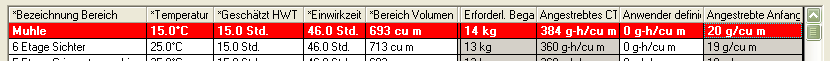
Nachdem Sie alle erforderlichen Felder richtig ausgefüllt
haben, klicken Sie auf die Schaltfläche Berechnen zur Anzeige der Dosis
und Dosierung nach Bereichen.
Dosierung
berechnen: Wenn die Daten für eine Zeile in der Tabelle
Gebäude-/Bereichs-Info eingegeben wurden (weiß unterlegtes Feld), klicken Sie
auf die Schaltfläche Berechnen um benötigte Begasungsmittelmenge,
Angestrebtes CT-Produkt und Zielkonzentration zu berechnen. Die berechneten
Ergebnisse für das gesamte Gebäude werden im Ergebnis-Fenster
angezeigt.
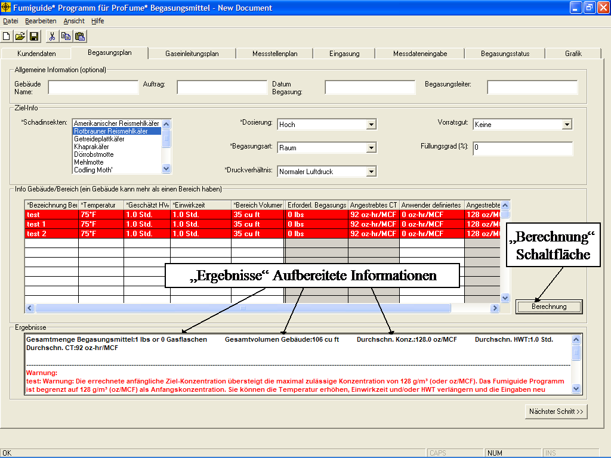
Anwender definiertes CT
Nach
Berechnung der Dosierungen für „Hoch“ oder „Niedrig“ kann der Begasungsleiter
eine entsprechende Dosierung empfehlen, die über „Niedrig" liegt und bis „CT
1500" gehen kann, welche den Kundenerwartungen entsprechen wird. Dies wird durch
die Eingabe eines Wertes in das Feld „Anwender definiertes CT“ und
anschließendes klicken der Schaltfläche „Berechnung“ erreicht.
Bitte beachten Sie, dass der Wert für "Anwender definiertes
CT" nicht kleiner als 36 oder größer als 1500 sein darf.
Warnmeldungen innerhalb des
Begasungsplan-Fensters
Wenn Sie Zahlen oder Werte eingeben, die außerhalb der oben angegebenen
zulässigen Eingabebereiche liegen, wird folgende Warnmeldung am Bildschirm
angezeigt:
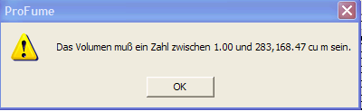
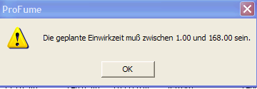
Andere Fehlermeldungen und
Warnhinweise im Begasungsplan-Fenster:
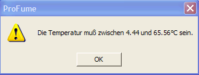
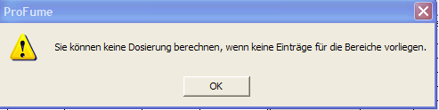
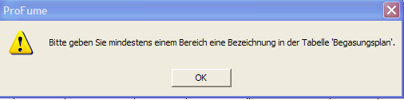
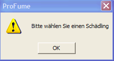
Wenn Sie eine Zahl eingeben, die
innerhalb des zulässigen Bereichs liegt, aber zu einer weniger als optimalen
Begasung führt, werden im Ergebnis-Fenster Warnmeldungen in Rot angezeigt.
Gleichzeitig ist auch die Zeile Bereichsdosierung im Fenster Gebäude-/
Bereichs-Info rot unterlegt.
Anzeige einer Warnmeldung wenn die
Temperatur unterhalb der Berechnungsgrenze liegt.
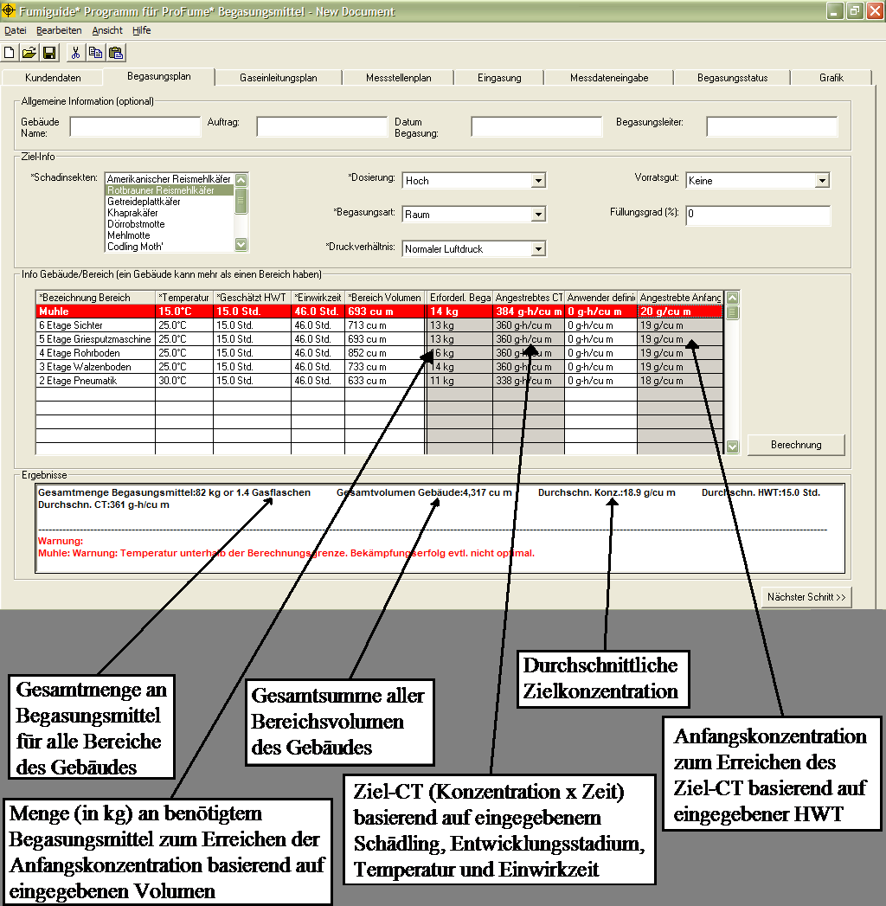